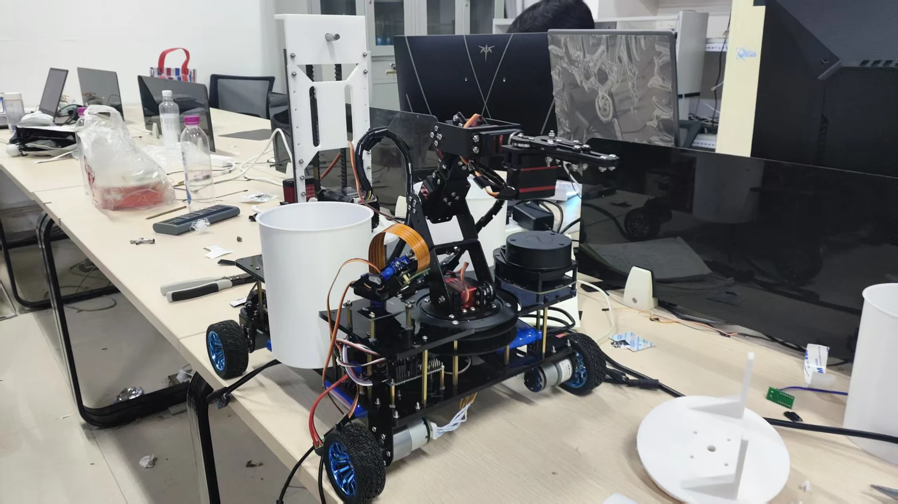
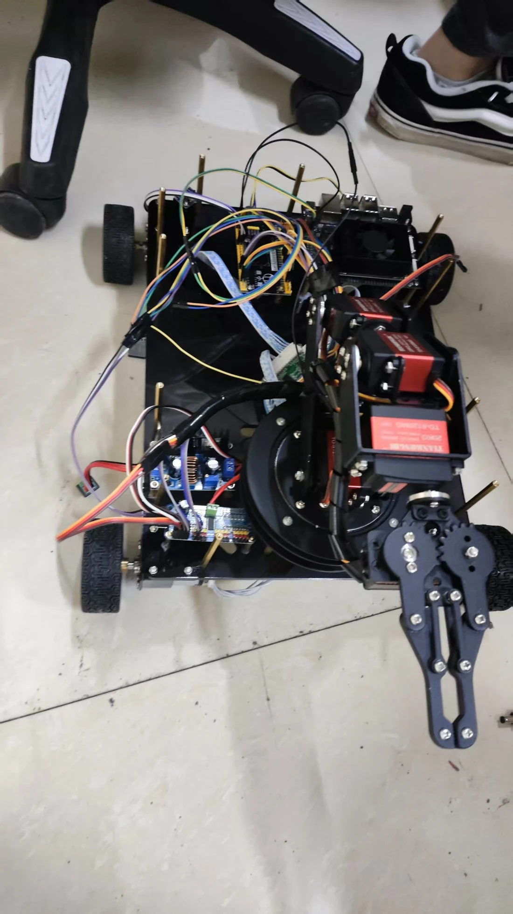

Prototype Validation · 早期整机原型
从第一台能工作的车，
走向完整机器人系统。
在最终整机重构之前，这台原型车先验证移动底盘、机械臂、夹爪与垃圾桶能否形成最小拾取闭环。
- 阶段
- 早期整机原型
- 核心目标
- 验证拾取闭环
- 验证环境
- 室内真实场地
- 后续
- 系统级重构
01
为什么先做原型
先确认动作链路成立，
再投入完整系统重构。
不追求外观，先确认底盘、机械臂和夹爪能在同一平台上协同工作。
通过真实拾取测试，可以直接观察机械臂覆盖范围、车体稳定性、线路干涉和动作时序问题。 这些问题在纸面设计与仿真里都不容易暴露，只有跑起来才会显形。
这些结果成为后续整机结构、布线方式、垃圾桶布局和控制流程重构的依据。
02
最小验证链路
用最小可运行系统
逐段验证运动与操作能力。
01 / M
移动平台
确认四轮底盘可以承载机械臂、控制板与垃圾桶完成室内移动。
02 / A
机械臂覆盖
验证机械臂安装位置、关节活动范围与地面目标之间的几何关系。
03 / G
夹爪拾取
测试夹爪接近、闭合、抬升和保持物体时的稳定性。
04 / L
动作闭环
将底盘接近、机械臂动作和垃圾回收串联为连续任务。
03
拾取演示
室内真实场地
02:08 · H.264
04
早期整车与结构
开放式结构，
便于快速调整。


05
重构前后
原型证明动作可行，
也暴露了集成问题。
快速验证原型
开放结构、快速接线，以验证底盘和机械臂动作链路为主。

重构整机版本
重新组织机械结构、感知系统、双桶分类和自动倾倒链路。
06
结论
原型的价值，
不只是证明"能动"。
01确认移动底盘与机械臂可以组合成可运行的拾取平台。
02提前发现机械臂覆盖、整车重心、线路干涉和动作时序问题。
03为后续 ROS2 任务流程、视觉定位和整机结构重构提供实机基础。